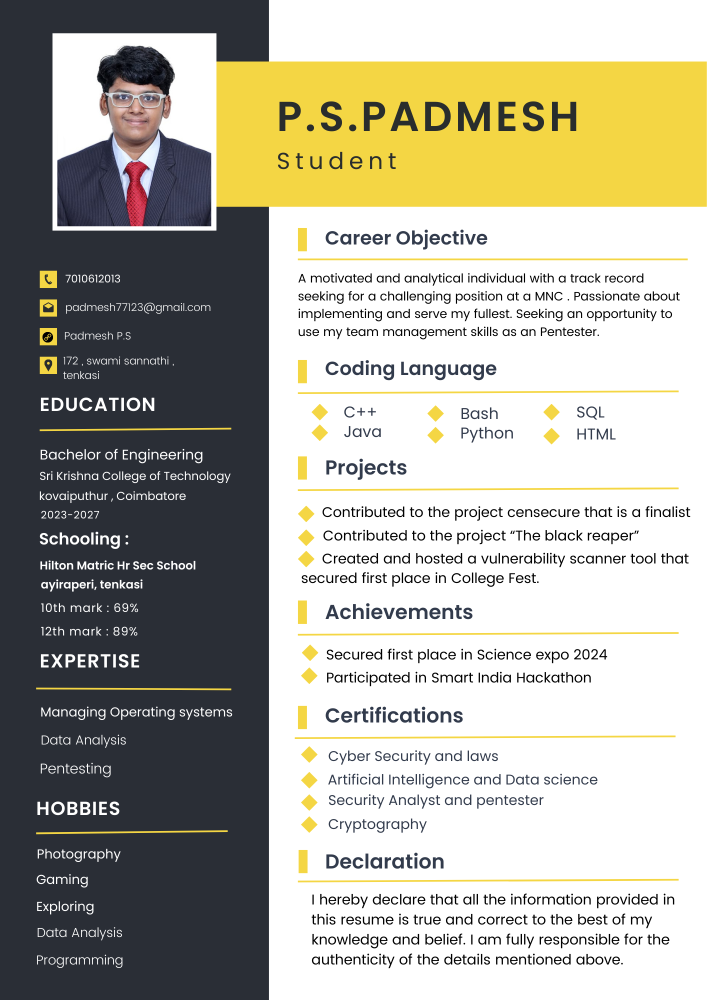

Resume

You’ll find all the boring stuffs I’ve had in my resume—like attending meetings that could’ve been emails and perfecting the art of staring at Excel sheets without crying. I’ve been a certified multitasker, balancing mind-numbing tasks with a dash of humor and curiosity. If you need someone who’s survived the so-called corporate grind with a smile (and a few memes), I’m your guy.
About
I’m the type of guy who loves being around family, but somehow always ends up caught up in the whirlwind of work or other distractions, forgetting to actually enjoy those moments. It’s like I’m physically present, but mentally off in another dimension. I mean, I’m all for making memories, but sometimes I get so busy “doing things” that I miss out on the fun part. Also, don’t even get me started on those people who tuck into their own little bubble all the time. You know the ones—always glued to their phones or wrapped up in their own little world. Call me old-fashioned, but I believe life’s about enjoying the people around you, not just existing in the same space without truly connecting.
Contact
Welcome to my digital corner of the internet, where I juggle with codes, break barriers (virtually, of course), and sometimes, get lost in a maze of cybersecurity puzzles. By day, I’m your friendly neighborhood ethical hacker, who might just spot a vulnerability before you even finish your coffee. By night, I’m either testing my limits with penetration testing or Googling “How to be a pro hacker without a cape.” If you’re looking for someone who can explain cybersecurity with a touch of humor (and a few memes), you’ve come to the right place. Just don’t ask me to fix your Wi-Fi—because even I can’t crack that one.
Also , my email id is padmesh77123@gmail.com
- GitHub
- LinkedIn
- Instagram